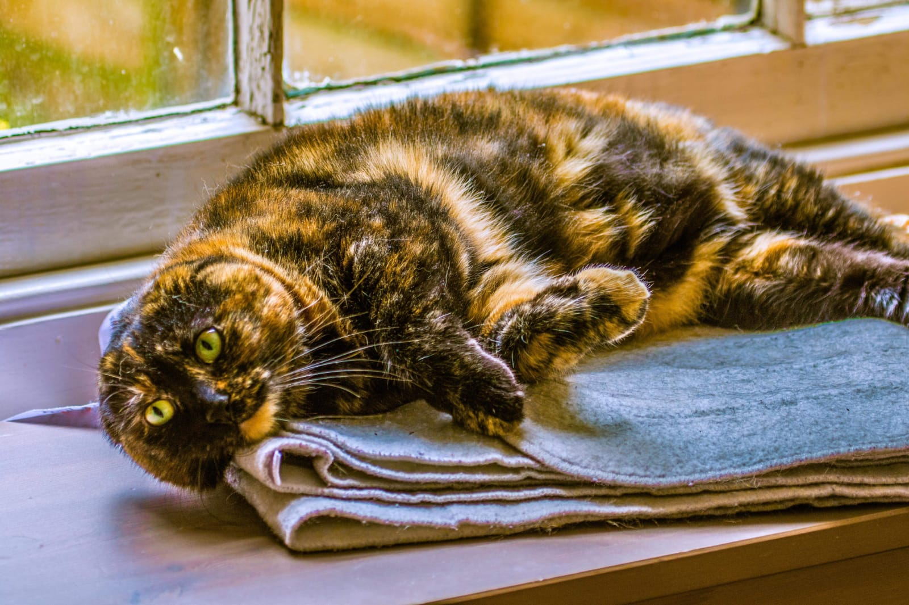
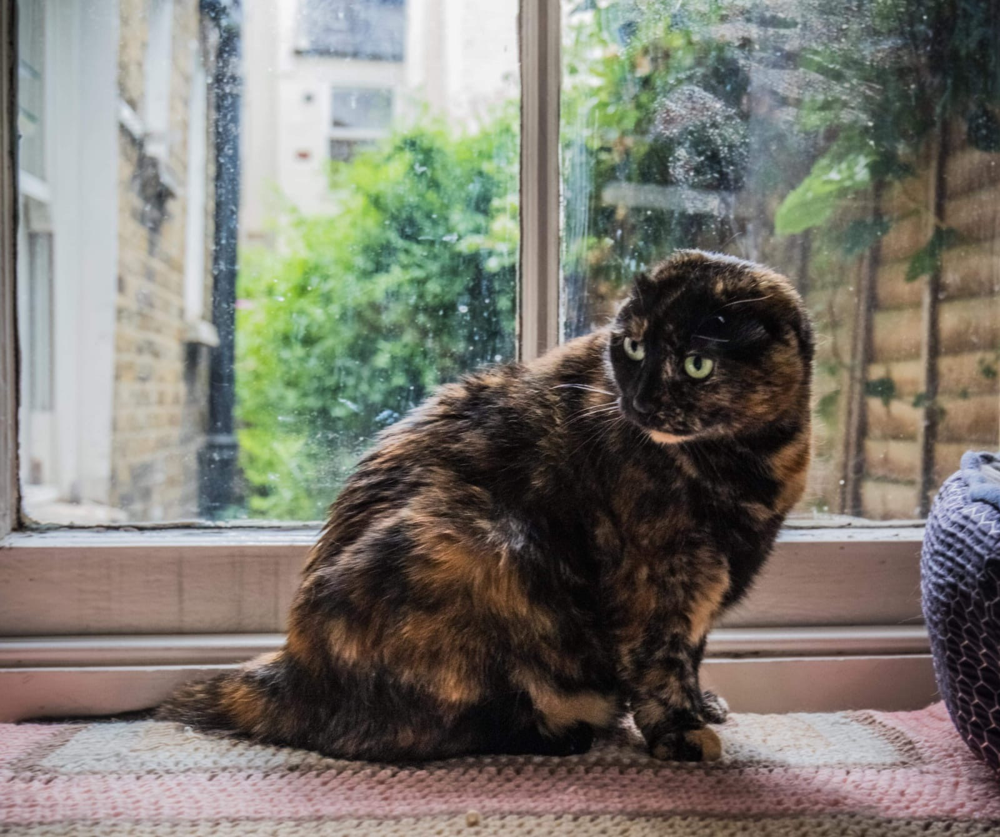
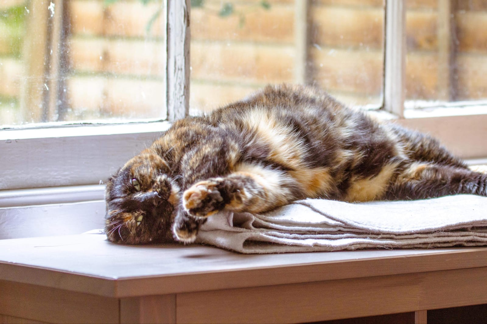

One of my favourite animals are cats!
Here is a photo of my sister's new cat called Missy .
Here is a list of 4 facts about her:
- She was adopted from Battersea
- She is unique as she has no ears
- She can still hear perfectly
- She sleeps for 20 hours a day


